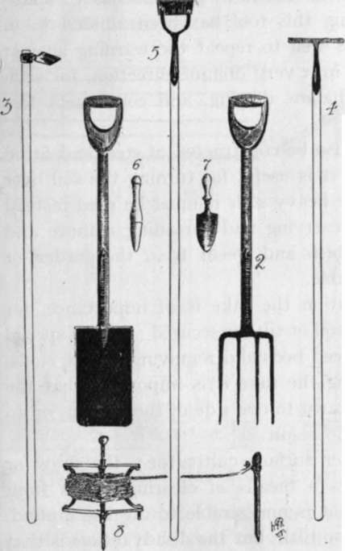
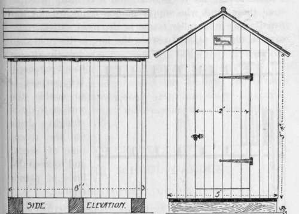
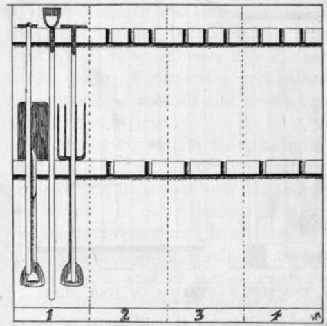

Chapter III. Garden Tools
Description
This section is from the book "School Gardening", by W. Francis Rankine. Also available from Amazon: School Gardening.
Chapter III. Garden Tools
IN all gardens it is necessary to have sufficient, strongly made tools ; each implement is designed especially for the work it is intended to perform. It is also essential that the tools shall be kept perfectly clean, and this is only done by carefully removing the dirt from them immediately after using. Occasional oiling keeps the steel parts free from rust.
A complete equipment consists of spade, fork, Dutch hoe, draw hoe, rake, hand-fork, trowel,dibber and line. To these should be added a wheelbarrow, water - can, and syringe.
The greatest amount of work, and at the same time the most important work, is undoubtedly performed with the spade which ought to be constructed of steel and fitted with a strong, ash'shaft. It should have a D-shaped, rivetted handle. The spade is constructed for working the soil to a depth varying from nine inches to a foot ; this depth is usually referred to by gardeners as a " spit." The method of using this tool has been alluded to in Chapter II, yet it is well to repeat the warning against inserting the spade in a very oblique direction, for such a practice means shallow digging, and consequent loss of plant food.
Fig. 6. a set of school garden tools.
1. Spade. 2. Fork. 3. Draw or cutting Hoe. 4. Rake. 5. Dutch or pushing Hoe. 6. Dibber. 7. Trowel. 8. Reel and Line.
The fork should also be constructed of steel and fitted with an ash shaft ; it is useful for turning the soil over lightly, and on some heavy soils it must be used instead of the spade. For carrying and spreading manure and the removal of rubbish and weeds from the garden or path it is indispensable.
In surface cultivation the rake is of importance, for by its aid a fine top soil or tilth is secured ; it is of special value in preparing seed beds and removing stones, clods, and weeds. In using the rake it is important that the soil should not be drawn to one side of the garden, or an uneven surface is the result.
The hoe is another surface cultivator ; the draw or cutting hoe provides a means of clearing weeds from growing crops when it is undesirable to dig the ground. It also produces a fine tilth, but the disadvantage is that the gardener walks forward and the weeds are often trodden into the soil. The hoe is of great service in the summer months when the surface weeds are flourishing and the warm, gentle showers promote rapid growth. For the latter purpose the Dutch or push hoe is invaluable. If it is used in an oblique direction it tends to produce a hard layer of soil just beneath the surface. In order to avoid the formation of a sole the hoe should be used so that it cuts in and acts on two inches of soil. In using this tool the worker walks backwards and the weeds are not trodden into the soil.
Fig. 7. front and side elevation of tool shed.
Among the smaller implements the dibber is of value in planting ; it is used for making the hole or station for the plant. In order to raise the plant with care a hand-fork or trowel is employed-the trowel is the more suitable. Either of these tools is to be preferred to the dibber for planting. The hand-fork is useful for removing weeds and stirring the soil in the flower border where a hoe cannot be easily employed.
A garden-line is indispensable, or otherwise our gardens would not present that neat, orderly appearance which makes them so attractive. For small plots a line may easily be constructed by cutting two stout pegs and fixing to them a few yards of strong cord. In large gardens a much longer line is essential, and it is easily procured from those firms who supply garden requisites. A line fitted to an iron roller frame is the most satisfactory ; care should be taken to store the line in the tool-shed directly after it has been used. Its purpose is to enable the worker to draw straight drills for the reception of seeds, and to keep the lines of plants regular.
A garden cannot be considered completely furnished unless there is a wheelbarrow ; the clearing operations of autumn and the manuring work of winter make it necessary that there should be some means of ready transport. A wheelbarrow saves time and labour and secures tidiness.
Fig. 8. Arrangement Of Tools On The Inside Walls Of Shed.
The interior is fitted with two wide and thick strips of wood which are cut so that the shafts of the tools fit into them as shown in the drawing.
The housing of the tools is an important question. For this purpose a tool shed is needed, and a wooden one of sufficient size will fulfil every requirement. It should be firmly erected and strongly built ; under the floor three battens must be placed so that the floor is kept dry. This arrangement is shown in the accompanying figure. The outside should be painted and the roof felted, tarred, and sanded. The interior should be fitted with racks, so that the tools can be stored neatly and in order. This may be accomplished in several ways, and any method is good provided that the tools can be taken out without inconvenience. Fig. 8 indicates a compact arrangement in which there is no encroachment upon the floor space.
Continue to:
- prev: Bastard Or False Trenching
- Table of Contents
- next: Chapter IV. The School Garden. Arrangement And Cropping